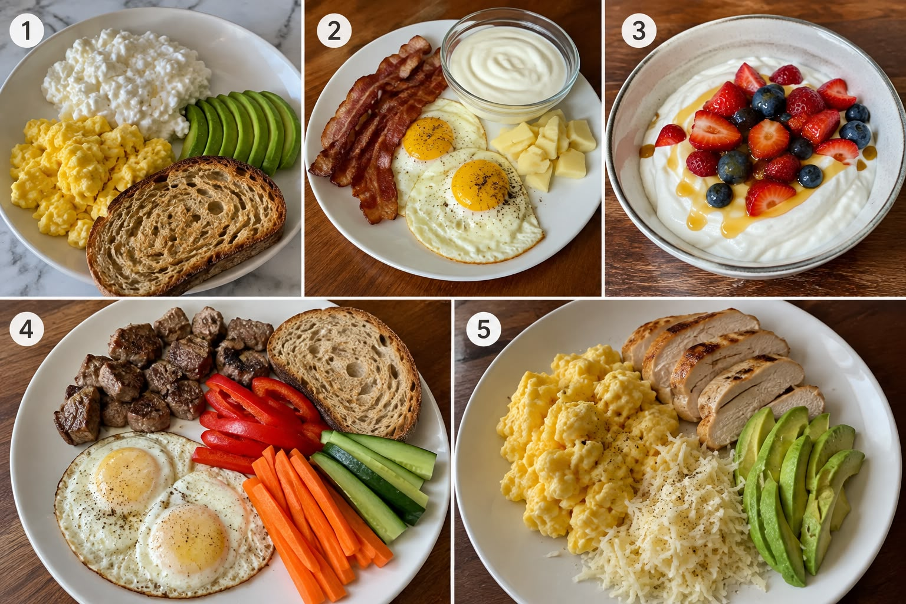
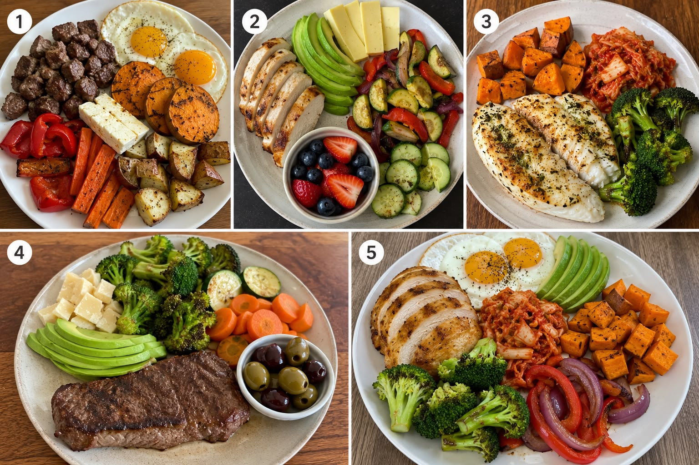

AL DESPERTAR
Mañana
Sal y recibe luz natural. Cuando puedas, observa el amanecer y dale a tu cuerpo una señal clara de que el día comenzó.
Luz naturalTu primer mes con Prime Health
Este mes no se trata de cambiar toda tu vida de golpe. Se trata de construir una base que puedas repetir: comida real, mejores decisiones y hábitos simples.
Preparado para ti por Prime Health
Tu día, simplificado
No tienes que memorizar todo. Sigue estos momentos como una guía práctica durante el día.
Sal y recibe luz natural. Cuando puedas, observa el amanecer y dale a tu cuerpo una señal clara de que el día comenzó.
Luz naturalElige carne, pollo, pescado, huevo o queso. Después construye el resto del plato con los alimentos de tu lista.
Arma tu platoNo te quedes con palabras como “healthy” u “organic”. Revisa qué contiene realmente el producto y prioriza ingredientes simples.
Lee ingredientesPonte tus lentes bloqueadores de luz azul al entrar en tu rutina nocturna. Hazlo parte de tu día, no algo ocasional.
Rutina nocturnaLista de alimentos PRIME
Filtra por tipo de alimento. Los botones te llevan a Walmart para revisar disponibilidad, precio y completar la compra.
Combinaciones para empezar
No tienes que comer lo mismo todos los días. Usa estas combinaciones como punto de partida y quédate con las que mejor te funcionen.


Aprende a combinar
Empieza con una fuente de proteína y añade alimentos de tu lista: vegetales, aguacate, frutas, boniato, fermentados o queso. Varía las combinaciones para que comer bien no se vuelva aburrido.
Ver alimentos disponiblesTu compromiso este mes
Vamos poco a poco. Haz bien estas bases y después seguimos construyendo encima.
Recuerda, Sandro
Este plan no busca que lo hagas todo perfecto. Busca que repitas las bases suficientes veces para convertirlas en tu nueva normalidad.
Volver al inicioEsta guía ofrece orientación educativa sobre alimentos y hábitos dentro del acompañamiento de Prime Health. No constituye consejo médico, diagnóstico ni tratamiento. Si tienes una condición médica, alergia o duda específica, consulta con un profesional de salud cualificado.